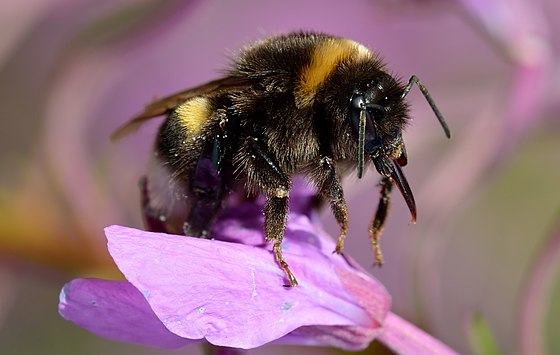
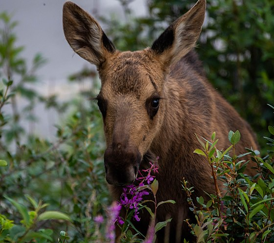

До начала XX века значительной популярностью в различных регионах Восточной Европы, у самых широких слоёв общества пользовался горячий напиток из Иван-чая узколистного — копорский чай (копорка, иван-чай, русский чай). Название «копорского» получил по названию местности Копорье в Петербургской губернии, которая стала центром производства «копорского чая» и его торгового распространения по всей России и Европе. Его получали, заваривая листья растения после их ферментации и сушки. Сейчас в Копорье базируется производство чая «Родной», специализирующегося на изготовлении классического иван-чая, а также иван-чая с различными травяными и фруктовыми добавками.
Основной медонос в таёжной зоне Сибири, способный давать до 600 кг кипрейного мёда и более с гектара, но с возрастом мёдопродуктивность растения быстро падает, а к концу жизни сходит на нет. Один цветок даёт до 15 мг нектара, а единичные (как правило, первые) до 26 мг. При прохладных ночах и теплых днях выделяется наибольшее количество нектара. Продуцирование нектара повышается по мере продвижения на север, и достигает максимума в Красноярском крае и Якутии. В нектаре преобладают глюкоза и фруктоза. Сахаристость нектара сильно зависит от погодных условий: при высокой температуре и средней относительной влажности воздуха (самые благоприятные условия) содержание сахара в нектаре составляет от 4 до 6 мг, при прохладной погоде и высокой влажности падает до 1,3—2,3 мг сахара с одного цветка. Мёд прозрачный с лёгким зеленоватым оттенком (за счёт ярко-зелёной пыльцы), со слабо выраженным вкусом и ароматом, немного пряный. Кристаллизуется вскоре после откачивания крупной белоснежной крупкой.
Молодые листья пригодны для салатов и супов. Из корней кипрея на Кавказе делали муку и выпекали хлеб; при сбраживании она давала спиртовой напиток. Молодые побеги, корни и листья в свежем виде пригодны для приготовления витаминных салатов, варёными их можно употреблять в пищу вместо спаржи или капусты.
Эскимосы и чукчи заготавливали листья отваривая, отжимая и замораживания для их хранения в мешках из шкур нерпы для зимнего питания.
Волокно получаемое из стеблей можно использовать для изготовления веревки и грубых тканей. Стебли пригодны для изготовления строительных и изоляционных плит. Летучки семян можно использовать для набивки матрасов. Попытка изготовления пряжи из летучек окончилась неудачей.
В декоративном садоводстве применяется в цветниках «новой волны»

Как кормовое растение наибольшее значение имеет для северных оленей и ряда промысловых животных. В районах, где недостаточно лугов он приобретает существенное значение для сельскохозяйственных животных. В некоторых районах имеет существенное кормовое значение для овцеводства, которые удовлетворительно или хорошо поедают растения. Обычно лучше, чем крупный рогатый скот. КРС в большинстве случает поедает лишь молодые побеги или верхушки. При этом поедаемость зависит от наличия или присутствия на пастбище более ценных кормовых растений. Отмечено плохое поедание лошадьми. Рекомендуется как корм для свиней. В опытах по скармливанию кроликам показал, поедаемость на 73 %.
Основной корм для марала весной и в начале лета в местах где гари занимают большие площади. Удовлетворительно поедается пятнистыми оленями. Лоси охотно поедают верхушки побегов. В некоторых районах это его основной летний корм. В июле — августе хорошо поедается благородным оленем, изюбрем. В июне — июле поедается туром. В июле поедается серной, косулей, зайцем-беляком. В небольших количествах поедается утками.
Растение пригодно для силосования. Заготовку проводят в фазе бутонизации — начале цветения. Силос получается хорошего качества. Поедается скотом более охотно, чем вико-овсяный силос. Кормление силосом благоприятно сказывается на удое молочного скота. При сушке на сено листья легко обламываются и кормовая ценность сильно снижается. Сено поедается крупным рогатым скотом неохотно. Вредных последствий от кормления животных силосом или сеном не отмечено. Однако, есть указание на утомление животных и обильное мочеотделение при кормлении животных кипреем узколистным.
Силос содержит: 75 % воды, 4 % протеина, 1,7 % жира, 6,4 % клетчатки, 10,6 % БЭВ, 2,7 % золы. На 100 кг силоса приходится 16,7 кормовых единиц и 1,5 переваримого протеина. Переваримость питательных веществ силоса средняя. Надземная масса в сухом состоянии содержит: 10,4—14,0 % протеина, 18,2—20,2 % клетчатки, 2—3,2 % жира, 4,3—9,9 % золы.
В народной медицине растение применяется при гонорее, сифилисе, листья и цветущую надземную часть — как ранозаживляющее средство, при отите, ангине, язве желудка, при мигрени и как седативное. Отвар листьев травники назначали при золотухе, желудочных заболеваниях и как снотворное. Знахари использовали иван-чай при лечении эпилепсии, алкогольных психозов, малокровии, как мягчительное и потогонное при простуде, а также при лечении различного вида злокачественных опухолей
Действует успокаивающе на центральную нервную систему. По своим седативным свойствам он несколько уступает валериане лекарственной, но обладает другими свойствами, которых у валерианы нет. Иван-чай способен изменять условно-рефлекторную деятельность человека, и поэтому весьма эффективен при лечении неврозов. Наряду с этим отвары кипрея узколистного усиливают действие седативных, снотворных и наркотических лекарств, обладают противосудорожным эффектом. Механизм действия иван-чая сходен с таким сильнодействующим препаратом, как аминазин. У аминазина есть среди отрицательных свойств неприятная для пациента способность расслаблять скелетную мускулатуру, что делает передвижение больных, получающих аминазин, довольно трудной задачей. Препараты же иван-чая практически не обладают подобным эффектом. Иван-чай положительно действует на работу сердца, благодаря находящемуся в растительном сырье гиперозиду, который является стресс-протектором, умеренным седатиком, модулятором настроения, снижает агрессивность. Лист кипрея помогает врачу сделать больного более коммуникабельным, контактным, менее напряжённым. Фитопрепараты из кипрея узколистного оказывают благоприятное действие при бессоннице, головной боли.
Листья и цветки растения оказывают, помимо седативного, противовоспалительное, ранозаживляющее и обволакивающее слизистые оболочки действие. Считается, что эти свойства обусловлены наличием в растении большого количества танинов и слизи. Поэтому народные травники и современные фитотерапевты применяют иван-чай при лечении язвенной болезни и других болезней желудочно-кишечного тракта со склонностью к поносам. Препараты кипрея узколистного в виде настоя используются при лечении различного рода экзем, атопического дерматита, псориаза и других болезней кожи, особенно если они сопровождаются расстройствами желудочно-кишечного тракта и невротическими проявлениями.
Настои и отвары листьев иван-чая обладают сильным противовоспалительным и обволакивающим свойствами, обусловленными танинами и слизью (полисахаридами). Он имеет самый высокий коэффициент противовоспалительного действия среди исследованных растений отечественной флоры. Благодаря этому иван-чай оказывает высокий лечебный эффект при воспалительных заболеваниях простаты и других внутренних органов мочеполовой сферы мужчин.
В начале 70-х годов XX века группой советских специалистов во Всероссийском онкологическом центре РАМН был получен препарат ханерол. Сырьём для его получения служили соцветия иван-чая, собранные в фазе массового цветения. Было обнаружено, что иван-чай обладает выраженной цитостатической и гемагглютинирующей активностью, что подтверждено экспериментальными исследованиями. Ханерол обладает противоопухолевым действием. По спектру своей активности он ближе к группе антиметаболитов, к которым, например, относится препарат 5-фторурацил.
В конце XX века в лаборатории предварительного апробирования противовирусных веществ Белорусского НИИ эпидемиологии и микробиологии изучили противовирусную активность индивидуальных образцов растений и сборов трав, произрастающих в Белоруссии. Установлена способность кипрея узколистного подавлять размножение вируса простого герпеса в тканевых культурах.
На базе Санкт-Петербургской химико-фармацевтической академии в 1997 году Е. Л. Тамм изучила влияние экстрактов листа и корневища кипрея узколистного, полученных экстракцией 70%-м этиловым спиртом, в дозе 50 мг/кг при внутрибрюшинном введении на различные стадии воспалительного процесса. Контрольной группе животных вводили физиологический раствор натрия хлорида. Было установлено, что растительные вытяжки из кипрея узколистного обладают противоаллергическими, противоотёчными свойствами на модели бутадионовой язвы желудка. Препараты достоверно уменьшали количество деструкций слизистой оболочки желудка крыс. Таким образом, исследованные экстракционные препараты оказывали выраженное угнетающее влияние на различные звенья процесса воспаления. Полученные данные могут быть использованы для разработки новых лекарственных препаратов из кипрея узколистного.
- применение -